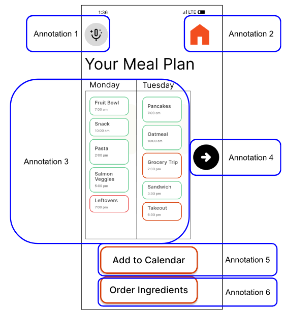
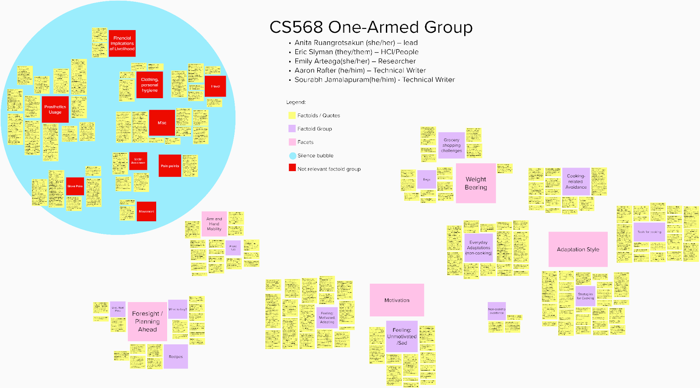
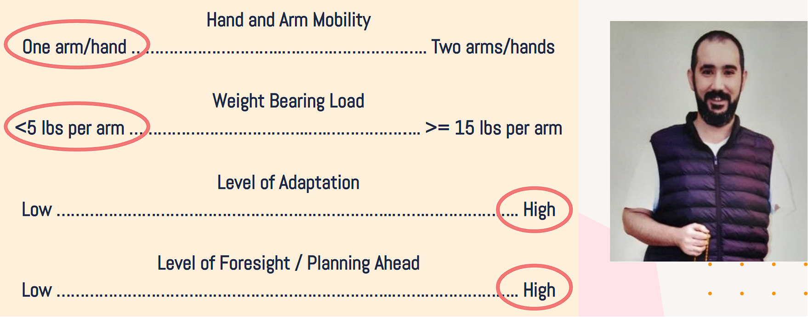
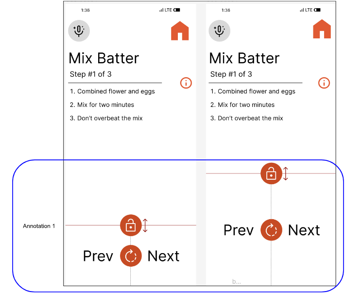
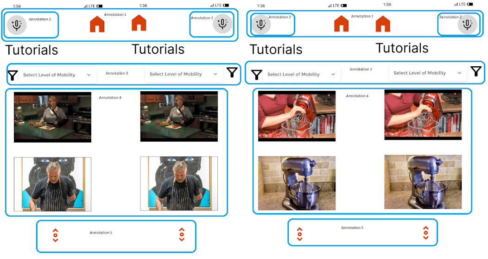

Foresight
Meal planning and grocery support for creating shopping lists, checking inventory, and preparing before cooking starts.
UX Case Study / Inclusive Design
A hands-free recipe and meal-planning concept for people cooking with one arm. The project focuses on reducing friction during recipe following, grocery planning, and technique discovery.

Problem Space
The concept centers on moments where a cook needs guidance but cannot easily touch or scroll a device: following recipe steps, checking ingredients, planning meals, or finding adapted techniques for kitchen tools.
Research Synthesis
The affinity diagram helped us connect accessibility needs with concrete kitchen moments: planning ahead, managing mobility, adapting tools, and keeping recipe guidance usable while hands are occupied.

Personas
The persona facets helped us think beyond a single default user and consider different levels of planning, mobility, technique familiarity, and support needs.


Concept Directions

Meal planning and grocery support for creating shopping lists, checking inventory, and preparing before cooking starts.

Voice assistance, larger controls, and hands-free recipe navigation while cooking tasks are in progress.

Technique discovery based on available tools, physical ability, and one-handed alternatives for kitchen tasks.
Prototype Links